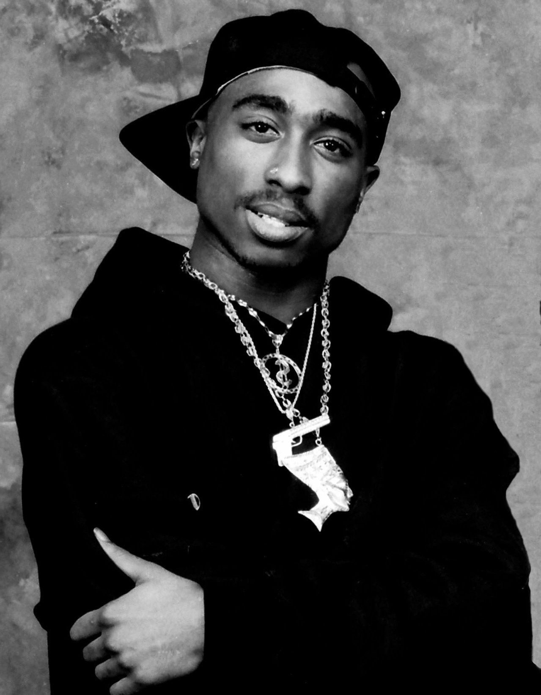

Tupac Shakur | 2Pac
1971 - 1996
Rapper | Songwriter | Music Rap God
Tupac Shakur was born in New York City to parents who were Black Panther Party members. Raised by his mother, Afeni Shakur, he relocated to the San Francisco Bay Area in 1988. His debut album 2Pacalypse Now (1991) cemented him as a central figure in West Coast hip-hop for his political rap lyrics.[6][7] Shakur achieved further critical and commercial success with his subsequent albums Strictly 4 My N.I.G.G.A.Z... (1993) and Me Against the World (1995).[8] His Diamond-certified album All Eyez on Me (1996), the first hip-hop double album, abandoned introspective lyrics for volatile gangsta rap.[9] It yielded two Billboard Hot 100-number one singles, "California Love" and "How Do U Want It". Alongside his solo career, Shakur formed the group Thug Life and collaborated with artists like Snoop Dogg, Dr. Dre, and the Outlawz. As an actor, Shakur starred in the films Juice (1992), Poetic Justice (1993), Above the Rim (1994), Bullet (1996), Gridlock'd (1997), and Gang Related (1997).
Albums
- Loyal to the Game (Original Album)
- Ghetto in the Sky (Junior M.A.F.I.A. Presents)
- Better Dayz Originals
- Beginnings: The Lost Tapes 1988-1991
- 2Pacalypse Now
- If My Homie Calls / Brenda’s Got A Baby (Maxi-Single)
- Holler if Ya Hear Me
- Strictly 4 My N.I.G.G.A.Z...
- Keep Ya Head Up (Single)
- Thug Life: Volume 2 (Outtakes)
- All Eyez On Me (1996)